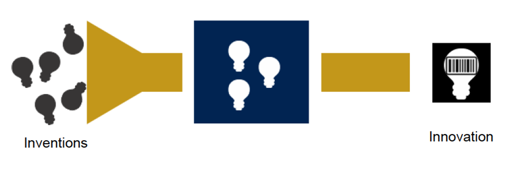

MGMT 457 W: Strategic Management of Innovation and Technology
Fall 2025
Kate Wang
Let's Warm Up: About Me
- Beijing in China -> Los Angeles in Southern U.S. -> State College in Northern U.S.
- Tech development and deployment in businesses, drones, cyber security, platforms, and AI
- Simulation case teaching advocator, deploy softwares and open tools
- Hobby: making wired open source tools and engage in open source community
Your Turn
- What do you prefer to be called?
- Where are you from?
- What is your major?

The Facebook vs. MySpace Story

Facebook vs. MySpace
Key Differences in Execution
MySpace
- Complete profile customization
- Top 8 friends
- Cluttered ads
- No real-name policy
- Clean, uniform design
- Real names only
- Targeted advertising
- Platform for apps
Course Objectives
What We'll Cover
- Market strategies for technology commercialization
- Value creation and capture
- Business model development
- Case studies of successful (and failed) tech ventures
What This Course Is Not
- Idea generation workshop
- Technical R&D management
- IT operations
Commercialization Tunnel
Assignments and Grading
Pre-class Blog
30%
Simulation
30%
Team Project
40%
Pre-class Blog and Discussion
- Form teams of 3-4 students
- Each team is responsible to write a blog for one class session to lead pre-class discussion on canvas
- Students that are not part of the blogging team will post comment to join the discussion on canvas
Business Simulation
Explore strategic decision-making through interactive simulation
Demand-driven vs. Technology-driven approachesTeam Project: Website Development
- Form teams of 3-4 students
- Develop a business website
- Present your technology commercialization plan
- Peer evaluations
This Week and Next Week
- Form project teams
- Set up team website
- Complete pre-class reading
- Engage in pre-class discussion